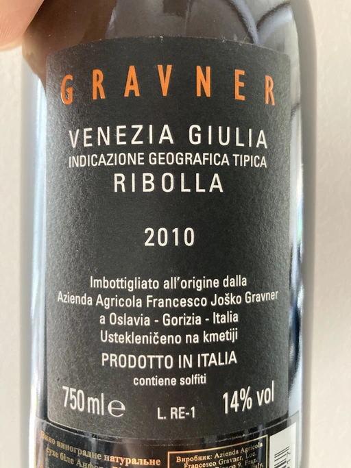

- Type
- White Still, Dry
- Producer
- Gravner
- Vintage
- 2010
- Location
- Italy, IGP Venezia Giulia
- Grapes
- Ribolla Gialla
- Alcohol
- 14
- Sugar
- 0.7
- Price
- 2327 UAH
- Cellar
- N/A
Producer
Many consider Joško Gravner to be the father of macerated white wine trend. Yet it’s interesting that before his first amber wine, he was a rising star in the modern and technological winemaking scene. He confessed that he would purchase any new equipment he could find. But his life turned upside down after a trip to California back in 1987. California was (and maybe still) a destination for many winemakers as this region represents triumph and possibilities of new. No wonder, as Californian wines won Judgement of Paris in 1976. This event dramatically changed the wine world. Joško Gravner was taking the same path as Californian winemakers - oak, science, additives and all that cool stuff. But after tasting 1000 wines in 10 days, he was astonished by faceless and tasteless results. And he realised - this is the road to a dead end. Now he knew how not to produce wines.
His search lasted for almost a decade. Joško Gravner studied the history of winemaking and searched for a way to produce authentic wines that talk in the language of land and history. He discovered that his ancestors made skin contact wines here in Collio/Brda. And then, he learned that Georgia has a very long history of winemaking spanning over 8000 years. And more importantly, this history includes skin-contact wines.
Equipped with knowledge and determination to make a change, Joško Gravner worked hard on his first release of extensively macerated Ribolla. It took three years for the 1997 vintage to become ready for release. But unfortunately, consumers were not happy about this drastic change in style. And most importantly, Gambero Rosso, an influential wine & food magazine, gave a devastating assessment of this new style. As a result, 80% of the 1997 Ribolla was returned to the winery. Joško Gravner was crushed. But he also realised that this was the way to go.
In the same 2000, Joško Gravner visited Georgia and ordered 11 qvevri. Unfortunately, no one knew how to transport these 1000L ceramic vessels, so 9 of them didn’t survive the trip. Because of this, Joško had to wait one more year before he could start to use qvevri for production. Nowadays, he owns more than 45 of them in total!
Interestingly, Ribolla and Breg (two wines produced by Joško Gravner) had the word ‘Anfora’ printed on the labels of the 2001 vintage. However, they were not 100% fermented in qvevri till 2003. Even more, no qvevri was used for Breg Rosso production till 2005. And in 2007, they decided to remove the word ‘Anfora’ from all labels, as this information became redundant. All their wines were fermented in qvevri now.
And today, wines produced by Joško Gravner are treated as the highest manifestation of skill. Many people consider Ribolla to be the best orange wine in the world.
Ratings
2021-06-02 - 8.50
Polished result of long and scrupulous craftsmanship. Unexpectedly clean style, deep and mature skin contact wine. Candy, caramel, toffee cake, apricot compote, fried nuts, dried fruits, tea. Complex, long and evolving finish. While I enjoyed this wine, it felt a little bit too polished, maybe even sterile? QPR is questionable, though I am happy to taste this iconic wine.